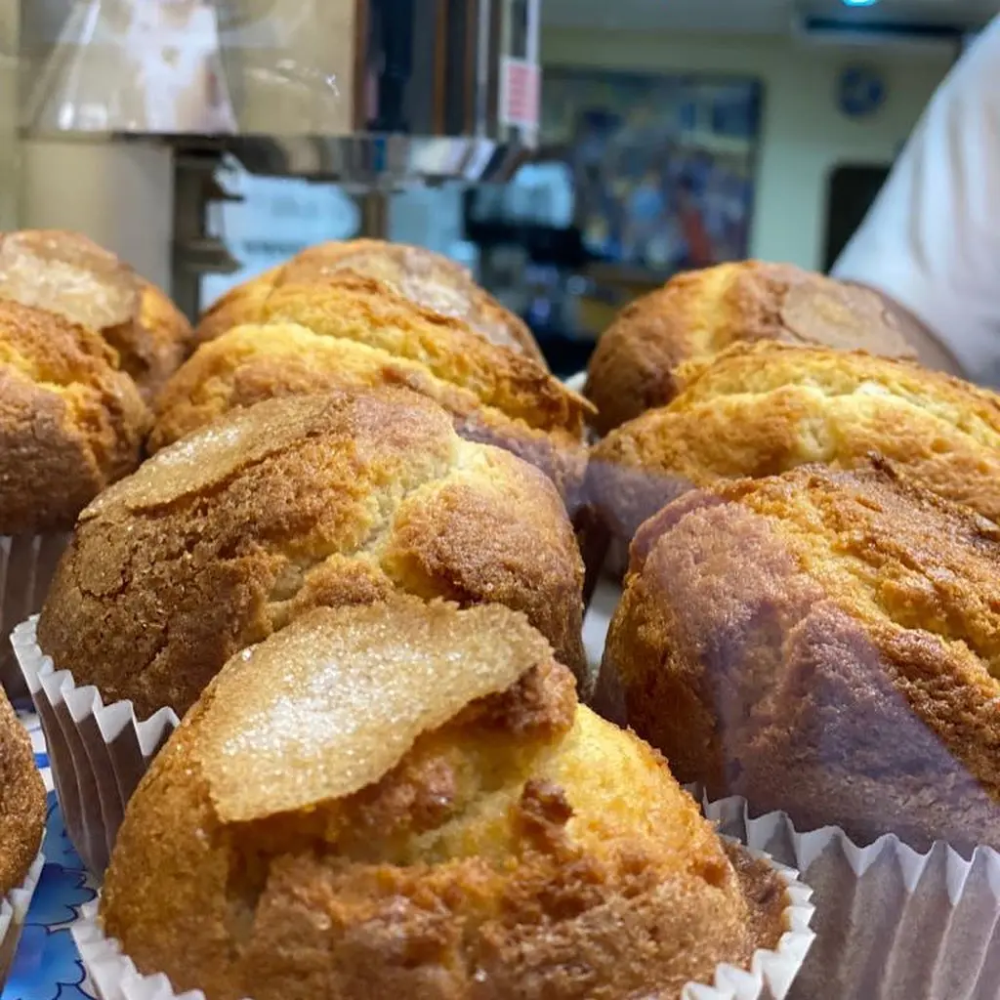

Melindros per sucar a la xocolata
Els melindros són bescuits lleugers i airejats, perfectes per sucar a la xocolata a la tassa espessa que servim a La Pallaresa.
Són una de les combinacions més típiques de les granges catalanes i una alternativa als xurros per a qui prefereix alguna cosa més lleugera.
Descobrir més clàssics de La Pallaresa
